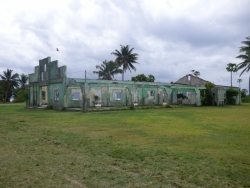
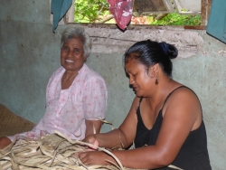
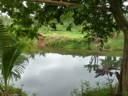

Finding a new home away from home
Despite the recent climate change promises made in Paris, some Pacific countries still fear that emissions cuts may come too late for the lowest lying atolls. They’re already starting to plan for the relocation of communities at risk from sea level rises and the humanitarian challenges that come with it.
Fiji is on the front line of this new displacement challenge as vulnerable local communities and regional neighbours look for new homes above the waves. Fiji has a rich history of migration to learn from as it navigates this new climate frontier.
Adapting to a new home
Seventy years ago this month, one thousand Banabans from Ocean Island — now part of Kiribati — were sent by the British to Rabi Island in Fiji’s far north. With the end of the Second World War, the British Government was keen to expand mining of phosphate on Ocean Island. For that to happen, the Banabans had to move. 15 year old Naomi Airau Christopher and her family were among those forced to migrate.
“We want our land, Ocean Island, but the British came and brought all of us to Rabi Island,” she said. A new island was bought for them, thousands of kilometres away in Fiji with big promises about what they could expect to find in their adopted home, including new houses. “In Ocean Island, they showed us pictures of houses. This is your land, this is your house. But when we came to Rabi, we slept in a tent,” she said.
The group had already been traumatized by years of Japanese occupation and war-time displacement. Now they were thrust into another unfamiliar environment and expected to adapt. The process was far from smooth. The islanders’ first night in tents on Rabi showed how ill prepared they were for life in their new home.
“When the cattle came down in the night, they walked through the ropes and the tents fell. And these people came out of their tents and they saw these monsters, these animals, they were seeing them for the first time in their lives. They got the scare of their lives in fact and they feel very homesick and they want to go home to Banaba,” David Christopher, Executive Director of Rabi Council said.
Having previously held skilled mining jobs at home, many struggled with their loss of position and missed the relative comforts in Banaba. Living in tents during the first annual cyclone season took a toll and the islanders were never given the two-storey houses they’d been promised. Tensions broke out in the community, and many also died after being exposed to mosquito-borne diseases for the first time. As food rations ran low, Fijians were paid to come and teach the Banabans how to grow unfamiliar crops in their new home. David Christopher believes there are many lessons to be learned from the Banabans’ relocation experience.
“People must be made aware, must be conscious of where they are going, told well beforehand… We were sort of coerced into coming,” he said.
Mr Christopher is the community’s representative in the Kiribati Parliament – a right the Banabans on Rabi retain despite their relocation. While most are now Fiji citizens, they also have a right of return to Kiribati. That’s one of the things the Banabans feel that officials got right.
“Our roots are there in Kirbati on Ocean Island. Our people are attached to the island and ....there is an urge, a longing to move back, at least to visit the place, to see for yourself where your old people lived and survived over the years,” he said.
Staying connected
Now in her 80s, Naomi Airau Christopher has made a new life on Rabi where she brought up her eight children but she has never forgotten her Banaban roots. “I miss it a lot. Sometimes we tell stories to our grandkids about Ocean Island… We miss Ocean Island because that’s our homeland. Also we miss the fish there,” she said.
At seven years old, Lizzie Kantati had already spent most of her young life displaced by the war and took the move to Rabi in her stride. Even though she prefers her adopted home with its plentiful fresh water, land and shade, she still dreams of visiting the place where she was born. “I want to go back to Ocean Island to see [it] because I left there when I was so small that I cannot remember…. You feel it, when it’s a long time you have never been and seen your island,” she said.
Even those who were just children when they arrived have retained some of their Ocean Island identity and culture.
“I am still Banaban but I am registered under Fiji law. My heart is still in Ocean Island…. Because we were living together we maintained the culture and the way we eat, our custom was following from the old people until now,” said Tonganariki Taratai who was four years old when she arrived in 1945.
Preparing for the future
The Banabans’ journey is one that Pacific Governments fear may be repeated in the years ahead — not because of war or colonisation, but because of climate change. Rising sea levels and more extreme weather events pose an imminent threat to low-lying atoll islands across the Pacific, particularly the Marshall Islands, Tuvalu and Kiribati, the latter of which has an average elevation of less than two meters (6.5 feet).
“We say with a lot of passion that we don’t want to leave our islands but the reality is this: unless support is coming, we have no choice, we have to go, wherever, whoever will take us,” Kiribati President Anote Tong told the World Humanitarian Summit Pacific regional consultation in Auckland earlier this year where the issue was high on the agenda.
Fiji has indicated it is open to the idea of accepting people displaced from Kiribati by rising sea levels and the Kiribati Government has purchased land on the Fijian island of Vanua Levu as a food security insurance policy. “I think it’s a matter of putting something there so that people can have a sense of comfort that there is a plan, that we, as their leaders, have something in mind for them, so that there is at least a hope into the future,” President Tong said.
This type of early planning is being encouraged by the Nansen Initiative — a joint Norwegian and Swiss government project that is looking at the best ways to manage disaster and climate change-induced displacement. The initiative has identified a legal protection gap for people displaced by disasters and climate change because they currently do not meet the international legal definition of a refugee. The initiative has gathered displacement lessons learned from all over the world — from Somalis in Kenya and Egypt, through to urban displacement in the Philippines and the Banabans in Fiji.
Professor Walter Kaelin from the Nansen Initiative told OCHA: “Planned relocation should be carried out in a way that directly involves affected communities in decision-making, respects their human rights and builds on the lessons learned from other experiences.”
He continued: “Any planned relocations to a new country must define the community’s legal status in the new state; help communities adapt to local customs and laws; consultation with host communities; and include measures to facilitate with the diaspora community to maintain cultural ties, such as allowing dual citizenship.”
The Fijian Government is leading the way in this planning process by developing national guidelines for the management of climate change–induced displacement, both domestically and internationally. Fiji has itself identified 45 communities at risk from Climate Change impacts and is currently mapping their vulnerability to prioritise villages for possible relocation. The majority will be able to move to safer parts of their own land.
The first of these relocations to higher ground happened in January 2014 at Vunidogoloa Village, after many years of discussion. The Methodist Church played a key role in supporting the community to accept this ‘option of last resort’ in a culture where connection to land is all-important.
“It's intrinsic to the livelihood and living of people. It's part of their lives, it’s intertwined, it’s interwoven it's everything that they are,” Julia Edwards from the Pacific Conference of Churches said. Such is this relationship with the land across the Pacific that some communities may in fact choose not to relocate or may place conditions on where they are prepared to go.
“Many people will never want to move from their traditional lands, even if they are facing imminent disaster. In the Solomon Islands, communities living at risk on Savo Volcano have indicated that while they are willing to relocate in an emergency, they would prefer not to be moved to the capital Honiara on the main island of Guadalcanal because of cultural differences, preferring instead to go to other parts of the country," said Paul Taylor, Chief Geohazard Scientist at the Secretariat for the Pacific Community.
As the world considers how to implement the recent promises made in Paris, the overriding message from the Banabans on Rabi is simple: consult widely with affected communities, get their consent for relocation and start preparing early. “They really should be given the choice. They must be prepared physically and mentally to move, to relocate and commit themselves to the movement,” said David Christopher.

{kind=link}
{kind=link}
{kind=link}
{kind=link}
{kind=link}
{kind=link}